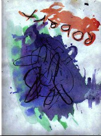
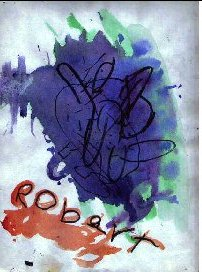
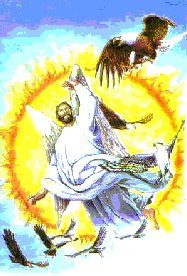
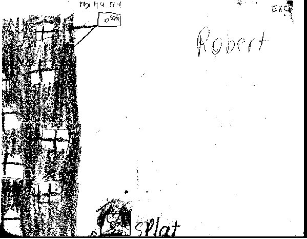

There do appear to be similarities with Robert's paintings and the WT painting; especially when the painting is reversed. Notice that when reversed Robert's name is situated where the threatening eagle appears in the painting; but when right side up his name appears where the vultures are painted.
(Did you notice that the clothing and wings of the figure in the WT painting form a reversed pentacle? A 5 pointed star, point down enclosed in a circle.)
If this is Robert's imitation of this WT picture, and it may very well be. Then Robert has painted the picture upside down and in order to put his name in the place of 'death', symbolised by the vultures.
The Eagle is the sunbird and represents God's ability to see everything from on high, so your worthiness is always under scrutiny.
For some reason Robert seems to have felt unworthy, otherwise why would he put his name in the place of death?
He has chosen to omit the use of white-the colour of purity (worthiness) altogether. He has replaced white with an indigo-purplish colour, which are the colours of spiritual teachings. In other words spiritual teachings have coloured his perception of his relationship to God. That the purple colour completely dominates and obliterates the figure so completely displays the subconscious power that a spiritual doctrine has impressed over his mind.
In the reversed (right way up) picture his name, which obviously must symbolise himself is now upside down but in the position of spiritual life. But it is spiritual life that has been cast out from heaven (the sun). (The eagle has rebelled against God-see it is outside the sun and complaining).
Another eagle appears in the background and within the sun so it is still accepted by the God figure. In other words he feels condemned; the figure is beckoning him and pointing towards spiritual-death (hell). Also cast out or frightened out is a terrified hawk, which in spiritual philosophy often represents a young novice which in this case may represent his brother.
But a hawk also represents light and the all-seeing eye. In other words Robert feels that the God figure has been unjust. He feels that his brother has been blamed for something that is not his responsibility or within his understanding. Perhaps Robert feels responsible for something bad that has happened to his brother. By the casting out of the more mature figure (the eagle) God has also cast out the young novice. God has thrown the baby out with the bath water, then. Robert feels that there is no redemption. That you are either out or you are in.
Often whenever a God figure appears subconsciously this is symbolic not only of God but also of a father, the earthly father.
A possibility exists that this painting represents a situation that involves Robert, Ben, their father and a religious organisation.
This is all very distressing stuff, Roberta. I do hope that you can find some peace. The purveyors, the perpetrators and those who turn a blind eye to this evil have a lot to answer for-and they will have to one day, karma will take care of that.
With love
Ellis



THE PROPHETIC ARTWORK OF ROBERT MOORE
This is the sort of artwork you can expect when your kids return from a day out with Jehovah Witnesses. Can't you just see it proudly displayed on your living room walls?
THE WATCH-OUT TOWER
Roberta
I don't see 8 windows. I see 7 windows and what is possibly a glass or open door.
If I were to attribute a symbolic interpretation I would say that the tower (which is what the building looks like) is always open.
The windows (each window is on a different level) represent 7 stages of opportunity/initiation/knowledge/ power structure where one can receive the light. They are all most likely linked to some sort of Christian religion, hence the crosses.
The 'safe' at the top represents a promise of safety but... it is not safe. It is very precariously perched and about to fall.
I am not sure whether the triangular structure is a (sign) bracket or a ramp. It may be that it is supposed to convey both ideas. The ramp to push the safe off and the bracket to hang the safe(ty) sign from. It may also be the gibbet to hang the transgressors from or the ramp to push them off. This off course would then make the whole picture a cycle of promises and threats to insiders and outsiders.
The 'fallen one' is in imminent peril. The figure at the bottom appears to be a person prostrate, hands together in a praying (pleading/begging) position.
Although the appearance of this figure is very square it does not appear to define the safe (not in my picture anyway). It does give the impression and therefore the threat of the safe falling on him? It does however convey a picture of limitation and confinement.
The message seems to be that one must plead for mercy/ forgiveness-whatever and enter the tower where you will be safe. Succumb to the doctrine at each of the 7 levels to achieve redemption.
The safe has not actually fallen so the message is one of a threat.
Altogether there are 30 squares of light shown. 30 is the number of the mind controlled by secret or other forces. It is the number on the door of the Tavistock Institute in London. This does not imply that the Tavistock Institute has anything to do with your son. I only mention it to show how these people use numerology.
The artist leaves an impression of personal futility, of never being able to measure up. When offered salvation by the tower it is a false promise because the inadequacies that drive one to join these organisations are actually magnified by an inability to achieve the perfection that is demanded.
Of course this is all dependent on the veracity of the picture that I have received. I cannot be sure as the picture is pressed to the left side and there may be more of the drawing that I cannot see.

If Robert and Ben Moore did kill themselves, (and I seriously doubt it) it is the best evidence yet for life after death. They were able to wipe their finger prints from a knife and a rifle, throw the gun out of a car, cover the rifle with leaves and all AFTER blasting themselves to death.
They showed no signs to their friends or family that they were unhappy enough to kill themselves and were making plans for the future.
What they did reveal through their artwork and writing is horrendous trauma from the Teachings of Jehovah Witnesses.
The Teachings of this repugnant, mind-assaulting cult encourages hate, death and suicide.
Did these evil and despicable instructions cause Robert and Ben to shoot themselves in order to enter their promised new world? Or did their lack of interest in and rejection of its sick values and intensly mind-numbing drivel push someone to kill them. Perhaps someone who themselves had become so mind-controlled that they believed they were actually doing the right thing.
Roberta Moore, the remarkable mother of these two young boys continues to strive for justice regarding the very suspicious circumstances that led up to and permeate the tragic deaths of her two little boys.
The authorities' handling of this case stinks.
Police mishandling has involved lost evidence, secreted files and unpresented evidence. There is a cover up in this case. No doubt about it.
Then again could the nasty Jehovah Witness indoctrination be a red herring? Did someone else happen upon the two boys and murder them for reasons known only to them. Did anyone else have a grudge against the boys?
Even though so much evidence says differently the verdict has remained as suicide.Police conduct remains atrociously inept and meanwhile Mrs Moore continues on her courageous quest.
All of the known facts and the ones hidden in office drawers must be exposed in a court of law and in full public view. Someone is skulking in the shadows. Someone knows exactly who is responsible. Your time will come matey. Your time will come.
More information on this case is available at David Icke's site. Please click here.